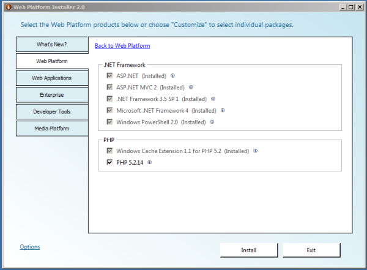
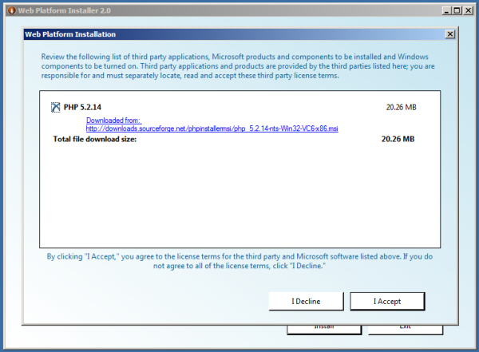
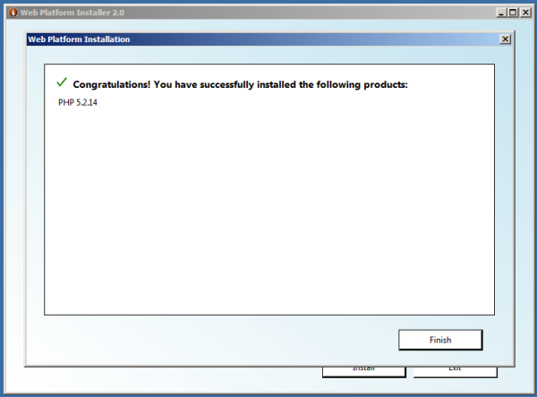
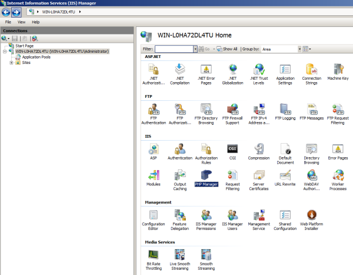
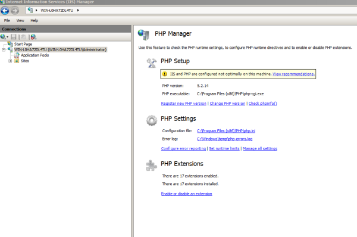
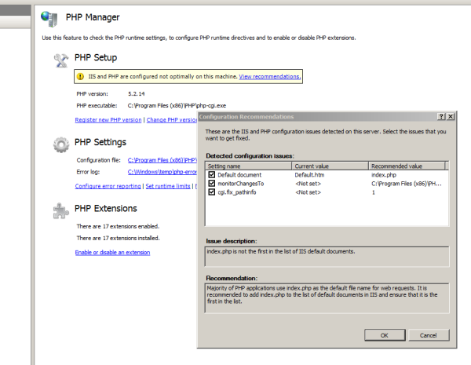
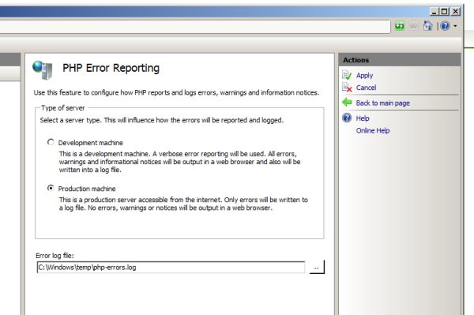
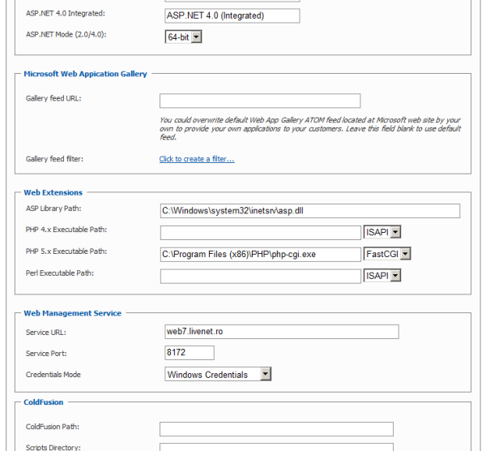

Installing PHP 5 with Microsoft Web Platform Installer
Translations:
This article explains how to install PHP5 with Microsoft Web Platform Installer for IIS 7.x
1. Download and install Microsoft Web Platform Installer from http://www.microsoft.com/web/downloads/platform.aspx
2. Open Start > All Programs > Microsoft Web Platform Installer;
3. Select Web Platform > PHP 5.x.x, click install, click I Accept button, click Finish, click Exit;
It is recommended to also select and install Windows Cache Extensions for PHP.
More information about Windows Cache Extensions you can read at http://www.iis.net/download/WinCacheForPhp



4. For much easier php settings management you can install PHP Manager for IIS which can be downloaded from http://phpmanager.codeplex.com/releases/
5. Open IIS Manager, select main node, search and open PHP Manager.


6. Click on View recommendations link, select all options, click OK;

7. Select configure error reportiong, select production machine, click apply;

8. Please read this article http://learn.iis.net/page.aspx/246/using-fastcgi-to-host-php-applications-on-iis-7/ and make any other customizations as needed.
9. Go to WebsitePanel > Web Service Properties Page on your WebsitePanel Server and make sure PHP 5.x Executable Path is set correctly and FastCGI is selected as described in the image below.

10. Make sure that Read & Execute permissions are set for NETWORK SERVICE and WSPWebUsers on you PHP instalation Folder (C:\Program Files (x86)\PHP)
With PHP Manager module for IIS it is also possible to change or register other PHP versions.